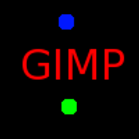
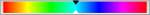
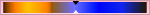

This command shows a dialog window when executed. This window can be used to manage the display filters and their options. Display filters are not to be confused with the filters in the -menu. Display filters do not alter the image data, but only one display of it. You can imagine display filters like big panes before your screen. They change your perception of the image. This can be useful for things like soft-proofing prints, controlling the color management but also simulation of color deficient vision.
This dialog has two small selectboxes. The left selectbox displays the Available Filters. You can move a filter to the right selectbox by selecting it and clicking on the button. The Active Filters window on the right displays filters you have chosen and which will be applied if the adjacent box is checked. You can move filters from the right selectbox to the left selectbox by using the button. If you select a filter by clicking on its name, its options are displayed below the two selectboxes.
-
Simulation of deficient vision (Section 5.12.5, “Color Deficient Vision”; Section 5.12.6, “Contrast”)
-
Digital photography helper (Section 5.12.4, “Clip Warning”)
-
Others (Section 5.12.7, “Gamma”)
ACES (Academy Color Encoding Specification) is a specification that defines a color encoding system created to standardize how color is managed to create an accurate color workflow. Within that standard, a RRT (Reference Rendering Transform) converts the colors from the ACES color space to the used color space in your image.

This filter allows to visualize underexposed and overexposed areas of a photo with user-configurable colors. For now, it’s mostly geared towards images where colors are stored with floating point precision. You will mostly benefit from this, if you work on 16-/32-bit per channel float images such as EXR and TIFF.
- Show shadows
-
Enable visualization for underexposed pixels (less than 0 in 32-bit float mode).
- Shadows color
-
User-configurable color that will be used to fill underexposed pixels.
- Show highlights
-
Enable visualization for overexposed pixels (more than 1 in 32-bit float mode).
- Highlights color
-
User-configurable color that will be used to fill overexposed pixels.
- Show bogus
-
Enable visualization for not-a-number (NaN) pixels, only visible when there is a division by zero error and suchlike.
- Bogus color
-
User-configurable color that will be used to fill NaN pixels.
- Include alpha component
-
When enabled, include the alpha component in the warning.
- Include transparent pixels
-
When enabled, include fully transparent pixels in the warning.
The images you create, we hope, will be seen by many people on many different systems. The image which looks so wonderful on your screen may look somewhat different to people with sight deficiencies or on a screen with different settings from yours. Some information might not even be visible.
- Color Deficiency Type
-
In this drop-down menu you can select from among:
- Protanopia[7] (insensitivity to red)
-
Protanopia is a visual deficiency of the color red. It's the well-known daltonism (red-green color blindness). Daltonism occurs fairly frequently in the population.
Protanopia is actually more complex than this; a person with this problem cannot see either red or green, although he is still sensitive to yellow and blue. In addition, he has a loss of luminance perception and the hues shift toward the short wavelengths.
- Deuteranopia (insensitivity to green)
-
With deuteranopia, the person has a deficiency in green vision. Deuteranopia is actually like protanopia, because the person has a loss of red and green perception, but he has no luminance loss or hue shift.
- Tritanopia (insensitivity to blue)
-
With tritanopia, the person is deficient in blue and yellow perception, although he is still sensitive to red and green. He lacks some perception of luminance, and the hues shift toward the long wavelengths.
Figure 16.43. Example of protanopia

Original image
A red-blind person cannot see the red (255,0,0) text on a black (0,0,0) background.
Figure 16.44. Examples of the three types of vision deficiencies in one image

Normal vision

Protanopia

Deuteranopia; in deuteranopia, yellow is shifted toward red.
Tritanopia; in tritanopia, green is slightly represented in the blue range.
Here, we are back in the medical domain. “Contrast Sensitivity” is the capacity of the visual system to distinguish slight differences in contrast. Some people with cataracts (which means that the lens has opaque crystals that scatter light over the retina) or retinal disease (for instance, due to diabetes, which destroys the rods and cones) have a deficiency in sensitivity to contrast: for example, they would have difficulties distinguishing spots on a dress.
If you are interested in this subject, you can browse the Web for “contrast sensitivity”.
- Contrast Cycles
-
With the “Contrast” Filter, you can see the image as if you were suffering from cataracts. You may have to increase the contrast of the image so that your grandmother can see it well. In most cases, only very low values of the Contrast Cycles parameter are of interest. Higher values create a side-effect which doesn't interest us here: if you increase the luminosity value above 255, the complementary color appears.
The correspondence between electrical intensity and color brightness is not exact and it depends upon the device (the camera, the scanner, the monitor, etc.). “Gamma” is a coefficient used to correct this correspondence. Your image must be visible in both dark and bright areas, even if it is displayed on a monitor with too much luminence or not enough. The “Gamma” Display Filter allows you to get an idea of the appearance of your image under these conditions.
![[Tip]](images/tip.png)
|
Tip |
|---|---|
|
In case you want not only to change the gamma of the current display, but the change the gamma within the image itself, you can find a description in Section 8.10, “Levels”. |